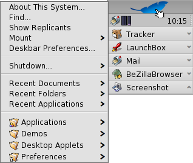

Italiano
Italiano Français
Français Deutsch
Deutsch Русский
Русский Español
Español Svenska
Svenska 日本語
日本語 Українська
Українська 中文 ［中文］
中文 ［中文］ Português
Português Suomi
Suomi Slovenčina
Slovenčina English
English| L'indice del filesystem |
|
Il menu della deskbar La Tray Lista dei programmi in esecuzione |
Deskbar
La Deskbar è il piccolo pannello che si trova normalmente in alto a destra sullo schermo. La Deskbar di Haiku corrisponde alla barra delle applicazioni di Windows con il pulsante Start. Contiene il menu dal quale si possono avviare le applicazioni e gestire le varie preferenze, una tray con un orologio ed altri strumenti come una lista dei programmi in esecuzione.

La Deskbar si può spostare in ogni angolo dello schermo sia nel bordo superiore che in quello inferiore mantenendo cliccato il mouse sulla zona a puntini a lato della tray e trascinandola nella nuova posizione; può essere anche modificata con un layout più compatto trascinando la zona a puntini sul menu della Deskbar.
 Il menu della Deskbar
Il menu della Deskbar
Cliccando nella parte alta della deskbar si apre un menu:
Informazioni sul sistema... - Mostra alcune informazioni di base sul sistema le licenze e i crediti del progetto Haiku.
Trova... - Apre la finestra che permette di effettuare le Query.
Mostra i replicanti - Mostra e nasconde il piccolo widget Replicant che si utilizza per rimuovere o accedere al menu contestuale.
Monta - Offre le stesse opzioni di quando si clicca con il tasto destro sul desktop (consultare la pagina Montaggio Volumi).
Preferenze della deskbar... - Apre il pannello per configurare la deskbar (per maggiori informazioni consultare sotto).
Arresto - E' presente sia l'opzione per che per .
Documenti, Cartelle e Applicazioni recenti - Una lista delle ultime cartelle, documenti e applicazioni aperte (per maggiori informazioni consultare sotto alle ).
Applicazioni, Demo, Deskbar Applet e Preferenze - Una lista delle applicazioni installate, le demo, gli applet e le preferenze (per maggiori informazioni consultare sotto alle ).
Preferenze della Deskbar

Menu
Qui è possibile impostare quanti documenti recenti, cartelle e applicazioni debbano essere visualizzati nel menu della deskbar, oppure si può decidere di non visualizzarli affatto.
Il pulsante apre la cartella /boot/home/config/be/. In cui ci sono i file e le cartelle che appaiano di default: , , , and .
Si può aggiungere ed eliminare ogni voce come collegamenti alle applicazioni, documenti ed ogni query semplicemente copiandola o cancellandola dalla cartella.Oppure più semplicemente trascinando un file, una cartella o una query salvata direttamente sulla deskbar nella posizione che vuoi.
Window
The Deskbar always stays above all other windows. The Deskbar pops to the front if the mouse pointer touches it. The Deskbar is reduced to only a few pixels and only pops up if the mouse pointer touches them. Applications
Ordina alfabeticamente le applicazioni in esecuzione. Anche se le applicazioni vengono ordinate alfabeticamente la voce Tracker rimane la prima della lista. Offre un piccolo widget per mostrare o nascondere tutte le finestre di un programma direttamente dalla sua voce nella Deskbar. I programmi appena lanciati hanno la loro finestra estesa automaticamente. Clock
Aggiunge la visualizzazione dei secondi sull'orologio.
La Tray

Oltre a tutto il resto, nella tray è presente anche l'orologio. Posizionando il puntatore del mouse al di sopra di esso viene visualizzata la data in un avviso. Cliccandoci con il tasto sinistro del mouse viene mostrato un calendario. Con il tasto destro del mouse, invece, viene mostrato/nascosto l'orologio ed è possibile impostare le preferenze dell'Orario.
Per qualsiasi programma è possibile installare un' icona nella tray per fornire un interfaccia all'utente. Il sistema di e-mail, ad esempio, cambia simbolo quando ci sono mail non lette e offre un menu contestuale per creare o controllare le nuove mail. ProcessController è un altro esempio di applicazione che utilizza la sua icona nella barra delle applicazioni per fornire delle informazioni (CPU/utlizzo di memoria) ed un menu contestuale.
Lista dei programmi in esecuzione

Si può modificare una specifica applicazione in esecuzione facendo clic sulla voce corrispondente nella deskbar e scegliendo una delle finestre dal sottomenu. Cliccando con il tasto destro è possibile minimizzare o chiudere una finestra o l'intera applicazione.
Attivando l'espansione nelle impostazioni della Deskbar, è possibile espandere o comprimere l'elenco delle finestre direttamente sotto la voce di un'applicazione.
Di fronte alla finestra di ogni applicazione c'è un simbolo che fornisce informazioni sul suo stato. Un simbolo luminoso significa che la finestra è visibile, un simbolo scuro che è ridotta al minimo. Tre linee di fronte a un simbolo indicano che non è l'attuale area di lavoro.